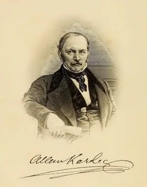
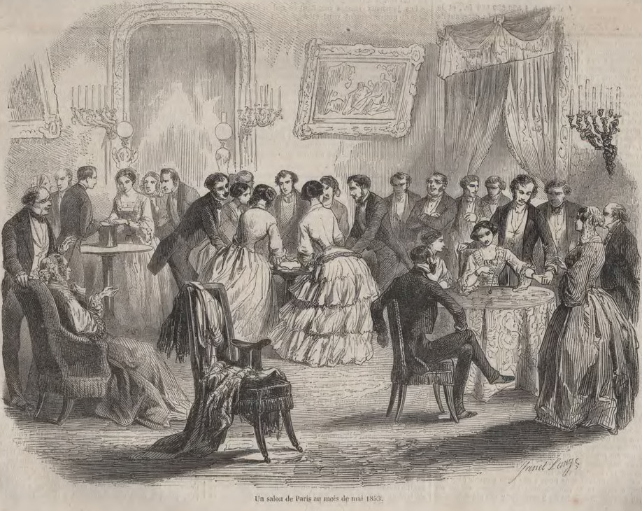

Spiritualism

Spiritism was a nineteenth-century religious-philosophical and quasi-scientific movement centered on communication with the spirits of the dead. Its practices included séances, table-turning, and other attempts to make unseen spiritual forces physically reachable. Although Spiritism overlapped with religion due to its concern for the soul, the afterlife, and the spiritual realm, it was not identical to traditional Christianity. Rather, it often presented itself as a modern practice that could prove spiritual truths through experimentation.
Allan Kardec’s The Spirits’ Book– first published in 1857– became one of the foundational texts of Spiritism and helped define the movement as a “doctrine” based on messages communicated through mediums (Britannica). This distinction plays a distinct role in Leo Tolstoy’s Anna Karenina. Tolstoy does not use Spiritism to represent genuine religious faith but as a fashionable attempt to make spirituality appear academic and scientific.
Spiritism emerged in the wider European context of nineteenth-century fascination with science and invisible forces. At this time, in both Europe and Russia, debates about spiritual phenomena overlapped with discussions regarding physics, religion, and the soul (Vinitsky). Spiritualists often employed scientific language, even comparing spiritual forces to electrical forces and presenting séances as experiments (Noakes). Table-turning, in particular, became both a source of social amusement and an intellectual endeavor, as spiritualists held séances in household rooms and even laboratories (Willin). This context informs Vronsky’s defense– and Levin’s criticism– of table-turning in Anna Karenina. When Vronsky compares Spiritism to electricity, he uses contemporary, fashionable language to make Spiritism sound credible.
Tolstoy’s disapproval of Spiritism did not stem from its being supernatural. Rather, he objected to its intellectual dishonesty and social superficiality. Through Levin, Tolstoy presents Spiritism as a symptom of the educated class’s arrogance. During a dinner at the Shcherbatsky’s household, momentarily after Kitty rejected Levin’s proposal and when Vronsky and Levin meet for the first time, Levin says that table-turning proves “that the so-called educated class is in no way superior to the peasants” (Tolstoy 54). Levin provides a glimpse into Tolstoy’s feelings, adding a second layer, criticizing the belief that educated spiritualists are smarter than peasants. Feuer’s account of Tolstoy’s broader worldview helps clarify this attitude. Tolstoy was deeply skeptical of Russia’s move towards Westernization, scientism, and superficial academic endeavors (Feuer 138). Spiritism slips into this pattern, combining flashy modern trends with faith. Thus, it allows the educated elite to indulge in irrational concepts under the guise of serious scientific inquiry.
In Levin’s strongest criticism of spiritism, he distinguishes scientific investigation from spiritualist indulgences. He argues that spiritualists began with “tables writing to them and spirits visiting them,” and only afterward claimed that these events were caused by an “unknown force” (Tolstoy 55). In other words, they start with a supernatural conclusion and then forge a scientific explanation. For Tolstoy, this idea reverses the proper order of events; a scientific explanation should arise from careful observation, but Spiritism begins with an exciting spectacle and invents a theory to justify it.
Spiritualism, therefore, should not be confused with Levin’s religious awakening. At the end of the novel, Levin’s faith comes from wisdom, humility, and a modest life. Therefore, the nature of his awakening sharply diverges from the spiritualists.
Overall, Spiritism in Anna Karenina appears as part of Moscow’s social atmosphere. In even the brief conversation between Levin and Vronsky at the Sherbatsky’s home, a major tension between characters emerges. Vronsky treats the concept of table-turning as potentially credible. Countess Nordstrom uses the conversation to tease Levin, and Kitty is caught between her emotional connection to Levin and Vronsky’s status and attractiveness. Meanwhile, Levin becomes isolated because he takes the issue more seriously. In addition to discussing Spiritism, therefore, the topic dramatizes Levin’s discomfort in Russian high society.
Tolstoy includes Spiritism in the novel as an example of the elite class’s superficiality. The aristocrats' interest in table-turning is not presented as a genuine spiritual quest but as a primarily social activity. Vronsky’s openness to the “unknown force” makes him appear open-minded and modern, while Levin’s skepticism makes him seem awkward and inappropriately intense. However, the novel ultimately gives Levin the superior moral position. His criticisms expose the hollowness of Spiritism; it becomes a minor but revealing point of historical context. It unveils a society that craves novelty but is unable to honor the gap between truth and artificiality.

Works Cited
- Noakes, Richard. "Spiritualism, Science, and the Supernatural in Mid-Victorian Britain." The Victorian Supernatural, edited by Nicola Bown, Carolyn Burdett, and Pamela Thurschwell, Cambridge University Press, 2004, pp. 23–43.
- Pedrick, Alexis, and Elisabeth Berry Drago, hosts. "Ghost Hunting in the 19th Century." Distillations. Science History Institute, July 6, 2021.
- Vinitsky, Ilya. Ghostly Paradoxes: Modern Spiritualism and Russian Culture in the Age of Realism. University of Toronto Press, 2009.
- Willin, Melvyn. "Table-Turning." Psi Encyclopedia. Society for Psychical Research, 2015.